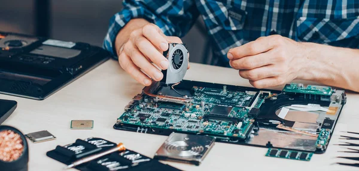
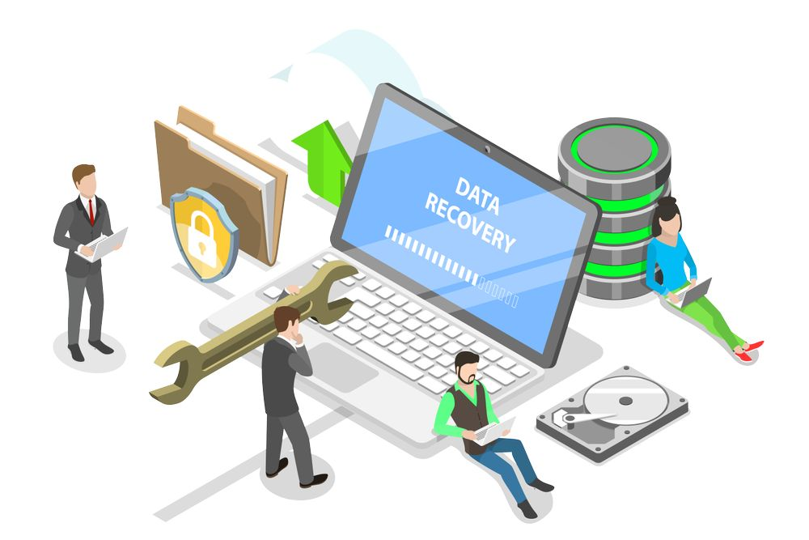
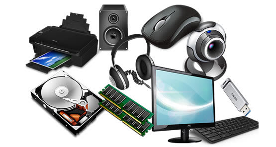
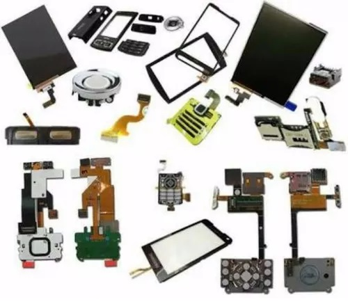
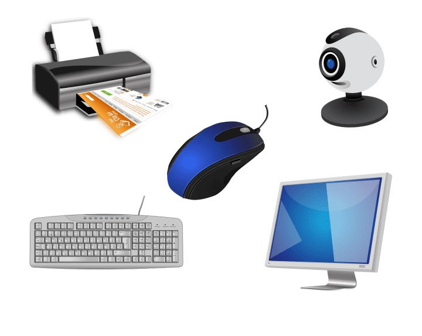
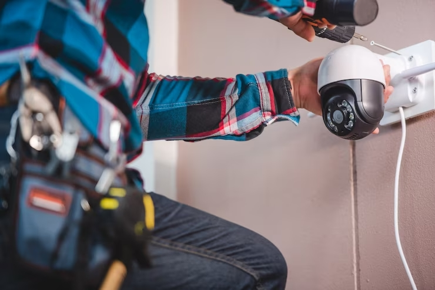
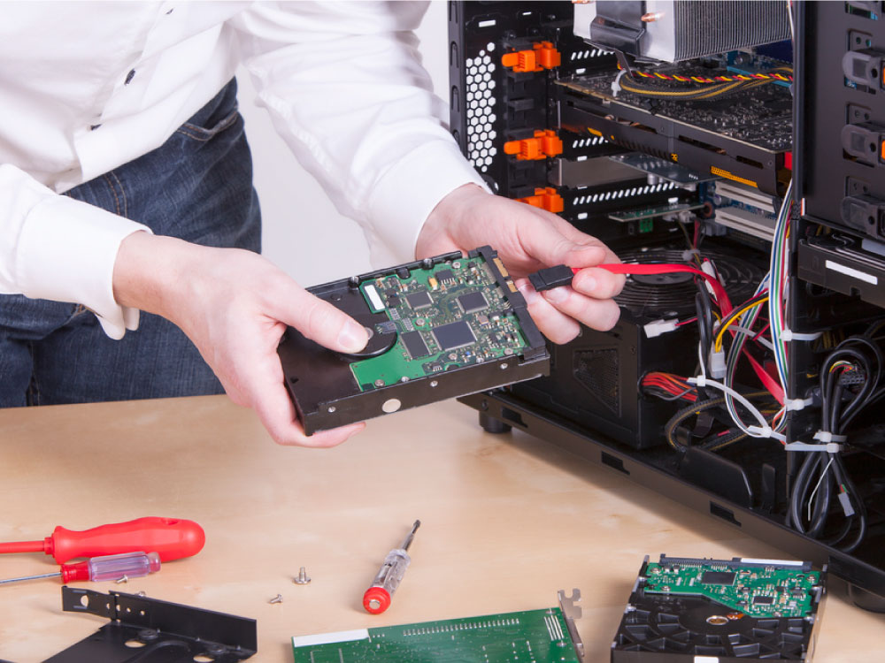

Servicios y Productos
Servicios de Reparación

Reparación avanzada de celulares, incluyendo reballing y reemplazo de componentes críticos.

Mantenimiento preventivo y correctivo de computadoras de escritorio y laptops.

Recuperación de datos de discos duros, USB y otros dispositivos de almacenamiento.
Productos Tecnológicos

Venta de accesorios tecnológicos, como cargadores, fundas protectoras, auriculares y cables de datos.

Componentes de repuesto originales y genéricos para celulares y computadoras.

Equipos periféricos como teclados, ratones, cámaras web y monitores.
Servicios Especializados

Instalación y configuración de sistemas de seguridad CCTV.

Soporte técnico remoto para solución de problemas inmediatos.